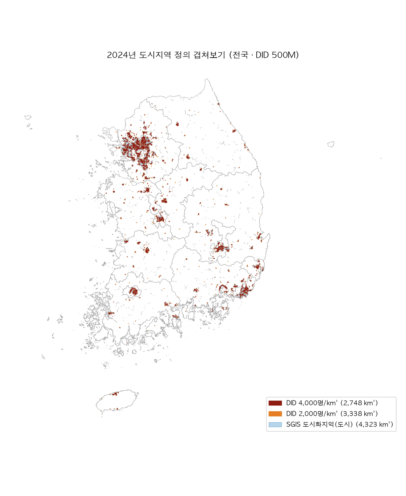
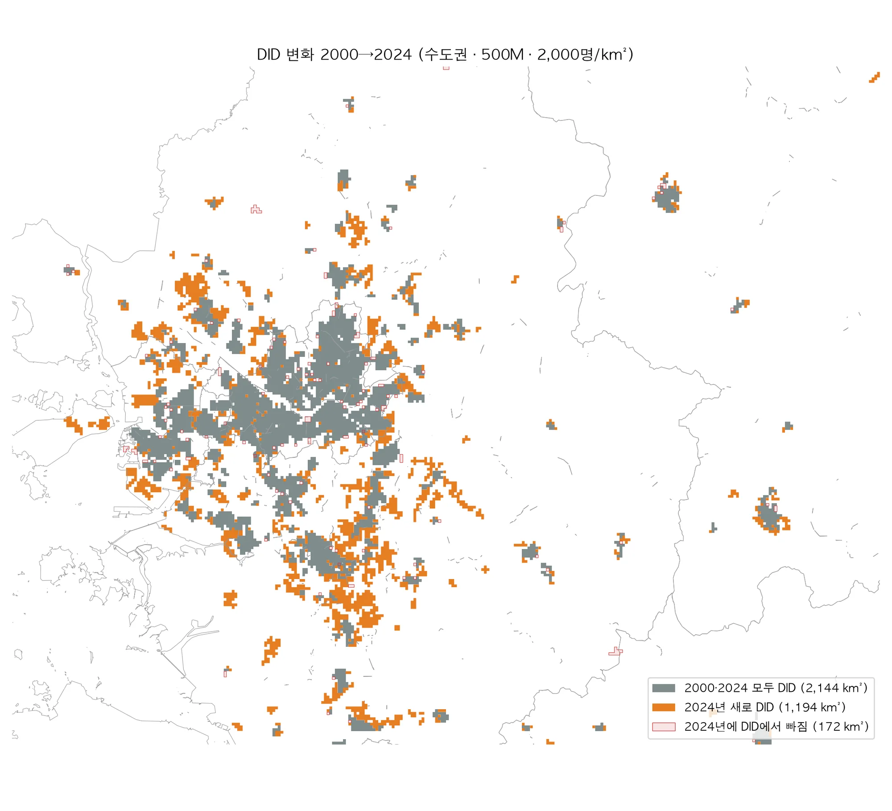
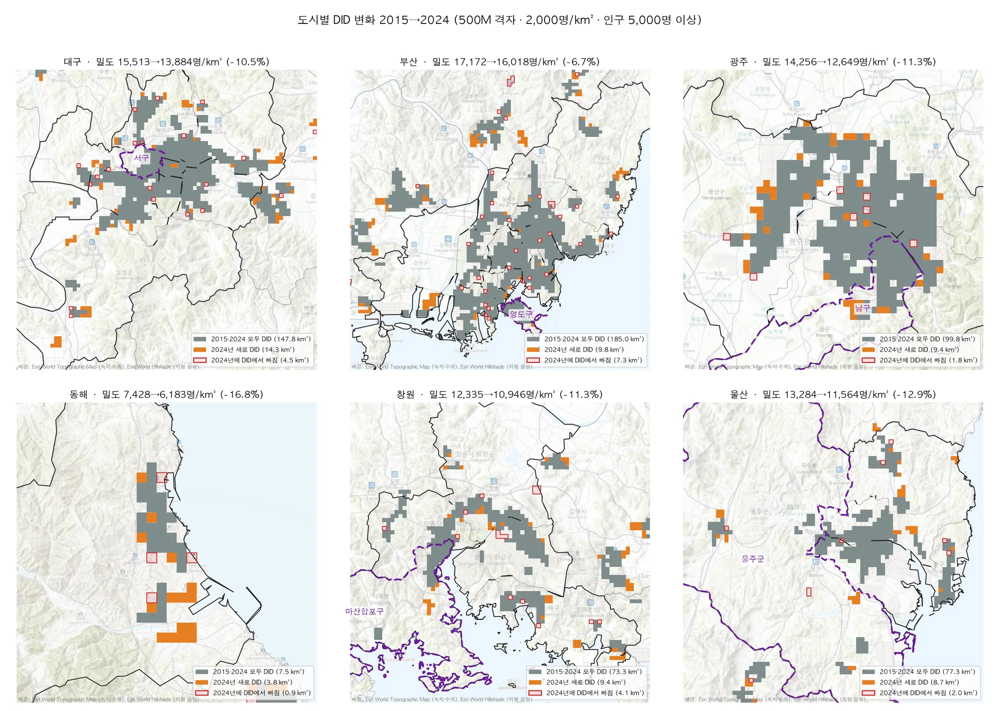

1연구 질문 및 분석 대상
분석 기간: 2015→2024년. SGIS 격자 인구가 2015년부터 등록센서스 기준으로 바뀌어, 그 전후를 잇는 증감에는 집계 기준 변경 효과가 섞인다. 같은 기준으로 비교할 수 있는 2015년을 출발점으로 삼았다(2000~2010년 값은 동적 지도와 시계열 차트에서 참고로만 제시).
도시화지역 정의: 처음에는 일본식 인구집중지구(DID, 2,000·4,000명/km²)를 썼지만, 국제 기준인 UN·EU·OECD의 도시화 등급(Degree of Urbanisation)으로 바꿨다. 1km 격자에서 도시는 1,500명/km² 이상 격자가 이어진 인구 5만 명 이상 덩어리, 도시·준밀집지역은 300명/km² 이상 격자가 이어진 인구 5천 명 이상 덩어리다. 기준이 달라졌으므로 더 이상 DID라 부르지 않고 통계청 SGIS와 같은 이름(도시·준도시)을 쓴다. 주 분석은 도시·준밀집지역(300명/km²)이다.
분석 대상: 전국(시군구 단위 비교)과, 행정안전부 지정 인구감소지역(89곳)·관심지역(3곳) 92곳 가운데 4-3(밀도 감소율)·4-4(면적 증가율) 순위에서 앞선 6곳이다. 모두 시·군 하나가 그대로 분석 범위다.
| 지역 | 밀도 감소율 순위 (전국 232곳) | 밀도 변화 | 면적 증가율 순위 (비수도권 165곳) | 면적 변화 | 고른 이유 |
|---|---|---|---|---|---|
| 전남 완도군 | 1 | −34.7% | 3 | +60.0% | 두 순위 모두 Top 10 |
| 경북 청도군 | 2 | −33.7% | 2 | +60.0% | 두 순위 모두 Top 10 |
| 강원 양구군 | 8 | −20.3% | 26 | +14.3% | 밀도 감소 Top 10 |
| 전북 순창군 | 14 | −18.2% | 8 | +40.0% | 면적 증가 Top 10, 밀도 감소 |
| 충북 괴산군 | 11 | −19.3% | 28 | +14.3% | 밀도 감소 차순위 |
| 충북 제천시 | 13 | −18.4% | 18 | +21.7% | 밀도 감소 차순위 |
두 Top 10에 든 인구감소지역은 완도·청도·양구·순창 4곳뿐이어서, 밀도 감소율 순위에서 그다음인 괴산(11위)·제천(13위)을 더했다. 밀도 순위는 2015·2024 두 해 모두 도시화지역이 5km² 이상인 시군구만 비교했다.
가설: 시간에 따라 도시화 면적은 커지지만 인구밀도는 감소하며, 비효율적인 도시화가 진행 중이다.
빈집 문제 해결의 우선순위, 공공 인프라 축소의 기준 설정 등
스펀지화(sponge city) · 도시 내부에 빈 땅·빈집 같은 저이용 공간이 시간적·공간적으로 무작위하게 상당량 생기는 현상. 생산성 저하, 행정서비스 비효율, 도시 매력 저하를 부른다. 구멍을 메우고 새 구멍이 생기지 않게 하는 노력이 필요하다. 이 분석에서 “빈 네모”(2015년에는 도시화지역이었지만 2024년에는 빠진 격자)가 그 구멍에 해당한다.
2사용 자료 및 전처리 과정
| 구분 | 자료 | 내용·용도 |
|---|---|---|
| 인구 | SGIS 격자 통계(인구) 1km·500m | 2000·2005·2010·2015·2020·2024년 격자별 총인구. 도시화지역 추출의 기본 자료(주 분석 1km) |
| 경계 | SGIS 격자 경계(2025), 센서스용 시군구 경계(2025 2Q) | 격자 면적, 시군구 집계와 분석 범위 |
| 검증 | SGIS 도시화지역 경계(2015·2020·2024) | 통계청이 같은 국제 기준으로 만든 도시·준도시 경계와 직접 추출 결과 비교 |
| 지정 | 행정안전부 인구감소지역 지정 현황 | 인구감소지역 89곳과 관심지역 3곳(분석 대상 선정) |
| 공공시설 | 공공데이터포털 학교·보건기관 표준데이터, 카카오 로컬 검색 | 초·중·고(설립연도), 보건소·보건지소·보건진료소, 시·군청·읍면사무소, 버스터미널 |
| 교통 | 국가철도공단 철도역, 한국도로공사 영업소 API, OpenStreetMap 철도 | 철도역, 고속도로 선형과 IC, 철도 선형 |
| 배경지도 | Esri World Topographic Map, World Hillshade (정적 지도), Esri Light Gray Canvas (동적 지도) | 지형·녹지 맥락(연하게) |
전처리 순서
- 격자 인구 정리 · SGIS 자료신청 원본에서 연도·해상도별 총인구(to_in_001)를 뽑아 격자 경계와 붙였다(EPSG:5179).
- 도시화지역 추출 · 1km 격자에서 300명/km² 이상 격자를 꼭짓점까지 맞댄(queen) 것끼리 묶어 인구 5천 명 이상 덩어리를 도시·준밀집지역으로, 1,500명/km² 이상 격자를 변을 맞댄(rook) 것끼리 묶어 5만 명 이상 덩어리를 도시로 남겼다(도시화 등급 1단계 방식).
- 검증 · 직접 추출한 도시·준밀집지역은 SGIS 도시+준도시 경계와 면적 기준 IoU 0.95, 도시는 SGIS 도시와 IoU 0.86이다(도시는 100% SGIS 도시 안). SGIS가 하는 빈틈 메우기(gap filling)는 하지 않아 조금 작게 나온다.
- 변화 구역 · 2015·2024 도시화지역을 겹쳐 유지(둘 다), 신규(2024에만), 빈 네모(2015에만)로 나눴다.
- 시설·교통 위치 · 좌표가 없는 시설은 카카오 로컬 검색(없으면 Nominatim)으로 위치를 찾고 분류명으로 걸렀다. 결과는 캐시에 저장해 재실행 때 다시 검색하지 않는다.
2010→2015 사이 SGIS 격자 인구 집계 기준이 바뀌었다(등록센서스 전환). 그래서 변화 분석은 2015→2024로 하고, 2000~2010 값은 시계열 차트에서 참고로만 보여 준다.
3지표의 정의, 계산식, 산출 결과
도시화지역과 밀도
산출 결과 · 전국 (1km 격자, 도시·준밀집지역 300명/km²)
도시(1,500명/km², 5만 명) 기준으로는 면적 3,354 → 3,708km²(+10.6%), 밀도 11,933 → 11,042명/km²(−7.5%)다.
산출 결과 · 6개 지역 (시·군 경계 안 도시·준밀집지역)
밀도 단위: 명/km². 1km 격자라 작은 군의 면적은 격자 몇 개(5~8km²)로 이뤄져, 격자 1~3개가 늘어도 증가율이 크게 움직인다.
4공간 시각화 · 비공간 시각화
4-1. 전국 도시화지역 동적 지도
1km 격자 도시화지역. 위 버튼으로 연도(2000~2024)나 2015→2024 변화를 고르고, 도시·준밀집(300)과 도시(1,500)를 함께 켜면 한 지도에 겹쳐 보인다 (변화 보기에서 둘을 함께 켜면 도시는 점선 테두리). 경계는 시·군 단위다(특별시·광역시·특별자치시는 하나로, 일반구가 있는 시는 시로 합침). 지역을 누르면 그 지역으로 확대되고 오른쪽 그래프가 그 지역으로 바뀐다. 그래프의 2010→2015 점선 구간은 SGIS 집계 기준 변경 구간이다. 배경지도 © Esri Light Gray Canvas (CARTO 키가 있으면 CARTO Positron).


4-2. 도시화지역 인구밀도 변화 시계열
비수도권 = 서울·경기·인천 제외(시군구별 합계라 전국 표와 조금 다르다). 2010→2015 사이 집계 기준이 바뀌었으므로 분석은 2015 이후 구간(2015·2020·2024)으로 한다. 수도권(면적 +8.6%, 밀도 −3.9%)과 비수도권(+3.6%, −3.4%) 모두 면적은 늘고 밀도는 내려간다.
4-3. 인구밀도 변화 Top 10 시군구 (전국 평균 대비)
2015·2024 두 해 모두 도시화지역이 5km² 이상인 시군구 중 밀도 감소율이 큰 순. 점선은 전국 도시화지역 밀도 변화율. 진한 막대는 수도권(서울·경기·인천) 밖 시군구다. ★ = 확대 분석한 인구감소지역(완도·청도·양구), ◆ = 그 밖의 비수도권(창원 마산합포·성산, 제주시, 청주 서원).
4-4. 도시화지역 면적 증가율 Top 10 시군구 (수도권 제외, 전국 평균 대비)
비수도권(서울·경기·인천 제외) 도시화지역 면적 증가율(%) 순위(2015년에 도시화지역이 있던 시군구). 진한 막대(▼)는 면적이 늘면서 밀도는 낮아진 곳, ★는 확대 분석한 인구감소지역이다. 2015년 면적이 작은 곳은 격자 몇 개로도 비율이 크게 움직인다. 점선은 전국 면적 증가율. 막대에 마우스를 올리면 증가 면적이 보인다.
4-5. 6개 지역 도시화지역 지도

4-6. 면적–밀도 변화로 본 시·군 유형
2015·2024년 모두 도시·준밀집지역이 5km² 이상인 시·군(특별·광역시는 하나) 대상. 가로축 면적 변화, 세로축 밀도 변화, 점 크기는 2024년 면적. 면적·밀도 변화가 모두 ±5% 안이면 정체로 묶었다. 점에 마우스를 올리면 이름과 인구 변화가 보인다. 확대 분석한 인구감소지역은 테두리를 굵게 했다.
가장자리 탈락 · 면적이 줄고 밀도가 오른 곳은 압축된 것이 아니다. 인구는 줄었고(중앙값 −4.5%), 가장자리의 밀도 낮은 격자가 300명/km² 아래로 떨어져 빠지면서 남은 부분의 평균 밀도가 올라갔다. 문턱값으로 경계를 긋는 방식에서 생기는 효과다. 또 밀도 변화는 대략 인구 변화 − 면적 변화이므로, 이 유형은 “면적이 넓어진 만큼 인구가 따라왔는가”를 보는 것이다.
5주요 결과 해석
도시화 면적은 커지고 인구밀도는 낮아졌다 — 가설 지지
전국 도시·준밀집지역 면적은 2015년 6,901km²에서 2024년 7,276km²로 5.4% 늘었지만 그 안의 인구는 2.4% 늘어나는 데 그쳐, 밀도는 6,675명에서 6,481명으로 2.9% 낮아졌다. 도시(1,500명/km²) 기준으로 보면 더 뚜렷하다(면적 +10.6%, 밀도 −7.5%). 수도권(면적 +8.6%, 밀도 −3.9%)과 비수도권(+3.6%, −3.4%) 모두 같은 방향이며, 500m 격자에서도 결과가 같다(300 기준 밀도 −4.5%, 1,500 기준 −9.9%). 전체 인구의 91%가 도시화지역에 살고 있어, 같은 인구를 더 넓은 시가지가 담는 효율이 떨어지는 도시화가 이어지고 있다.
인구감소지역에서는 읍 가장자리가 “얇게” 늘어난다
6곳 모두 도시화지역이 14~60% 넓어지고 밀도는 18~35% 낮아졌다. 그런데 도시화지역 인구는 크게 늘지 않았다(완도 +4%, 청도 +6%, 순창 +15%, 제천 −1%, 양구·괴산 −8~9%). 면적이 늘어난 것은 사람이 늘어서가 아니라, 읍 중심지 바로 바깥의 1km 격자 1~3개가 300명/km² 문턱을 넘어 덩어리에 붙었기 때문이다(완도·청도 +3km², 순창 +2km²). 즉 이 지역들의 밀도 저하는 중심부가 비면서(양구·괴산) 또는 주변이 묽게 붙으면서(완도·청도·순창) 일어난다. 제천은 둘이 함께 나타나 빈 네모 2km²와 신규 7km²가 동시에 생겼다. 시설은 대부분 2015·2024 모두 도시화지역인 중심 격자에 있다. 새로 도시화지역이 된 격자에 든 학교는 지역별 0~2곳뿐이고, 보건지소·보건진료소 같은 보건기관의 70~95%는 도시화지역 밖 면 지역에 흩어져 있다.
시·군 유형: 가장 흔한 것은 “넓어지며 묽어지는” 확산·저밀화형
면적·밀도 변화로 시·군 144곳을 나누면 확산·저밀화(면적↑ 밀도↓)가 59곳으로 가장 많고, 인구는 중앙값 −2.6%로 오히려 줄었다. 인천·대전·광주·울산·창원·청주 같은 큰 도시와 분석한 인구감소지역 6곳이 모두 여기에 든다. 성장·고밀화(28곳, 세종·진천·나주·용인 등)는 인구가 크게 는 곳(중앙값 +29%)으로, 신도시·혁신도시·산업단지가 들어선 곳이다. 가장자리 탈락(36곳, 동해·익산·정읍·순천 등)은 인구가 줄며 가장자리가 문턱 아래로 떨어진 곳이고, 부산·대구 같은 대도시는 정체(17곳)에 가깝다. 서울은 면적과 밀도가 함께 조금 줄어든 축소·공동화(4곳)다. 뚜렷이 갈라진 무리라기보다 연속적인 분포이므로, 유형은 경향을 읽는 틀로 쓴다.
축소의 기준: 유지 도시화지역 안의 기존 인프라
비수도권 면적 증가율 상위는 진천(+64.7%), 세종(+57.5%), 나주(+40.7%)처럼 산업단지·행정도시·혁신도시가 들어서 밀도도 함께 오른 곳과, 완도·청도·순창·계룡·증평처럼 면적만 늘고 밀도가 떨어진 곳으로 나뉜다. 인구감소지역 6곳은 모두 뒤쪽이다. 연구 질문 2와 연결하면, 학교·군청·버스터미널·철도역이 모여 있는 2015·2024 모두 도시화지역인 읍 중심 격자가 인구감소지역에서 지켜야 할 핵심이고, 문턱을 겨우 넘어 붙은 가장자리 격자로 시설을 넓히기보다 중심의 접근성을 살리는 방향이 축소 시대의 기준이 될 수 있다.
한계 · 분석 기간이 9년으로 짧다(2015 이전은 집계 기준이 달라 제외). 작은 군은 1km 격자 5~8개로 이뤄져 격자 하나의 변화가 수십 %로 나타난다. 격자 인구의 소지역 비공개 처리 영향이 있다. SGIS의 빈틈 메우기는 하지 않았다.
출처 · 저장소
코드와 결과 표, 도시화지역 폴리곤: github.com/Seon-Cho/W8_DID-MAP. 원자료(SGIS 격자 인구, 카카오 검색 결과)는 제공 기관 이용 조건 때문에 저장소에 올리지 않았고, 받는 방법을 README에 적었다.
자료: 통계청 SGIS 격자통계·도시화지역 경계, 행정안전부 인구감소지역, 공공데이터포털, 국가철도공단, 한국도로공사, 카카오 로컬, OpenStreetMap 기여자, Esri·CARTO 배경지도. 도시화 등급: Eurostat, Applying the Degree of Urbanisation (2021).